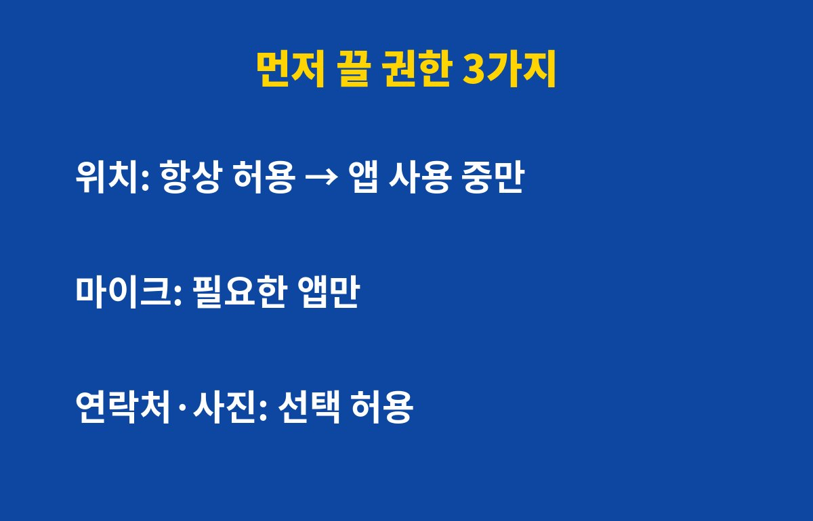

앱 권한을 한 번도 점검하지 않았다면 스마트폰을 쓰는 분 대부분이 해당돼요. 내 위치와 마이크, 연락처를 어떤 앱이 몰래 들여다보고 있는지 궁금하지 않나요?
앱을 처음 설치할 때 "허용"만 연타한 경험, 다들 있죠. 문제는 그 허용이 그대로 남아 몇 달, 몇 년씩 이어진다는 점이에요. 안 쓰는 앱도 위치와 사진 접근 권한을 계속 쥐고 있을 수 있어요.
권한이 많을수록 앱 하나가 해킹되거나 정보가 유출됐을 때 피해 범위도 커져요. 그래서 권한 정리는 가장 돈 안 드는 보안 습관이에요.
모든 권한을 다 끌 필요는 없어요. 아래 세 가지만 먼저 손봐도 체감이 커요.
| 권한 | 추천 설정 | 이유 |
|---|---|---|
| 위치 | 앱 사용 중에만 허용 | 이동 경로가 계속 쌓이는 걸 막아요 |
| 마이크 | 꼭 필요한 앱만 | 통화·녹음 앱 외에는 필요 없는 경우가 많아요 |
| 연락처·사진 | 선택한 항목만 허용 | 전체 접근을 막아 유출 위험을 줄여요 |

안드로이드는 설정 > 개인정보 보호 > 권한 관리자, 아이폰은 설정 > 개인정보 보호 및 보안에서 항목별로 어떤 앱이 접근 중인지 한눈에 볼 수 있어요. 기종과 OS 버전에 따라 메뉴 이름은 조금 다를 수 있어요.
항목을 눌러 들어가면 앱 목록이 나오는데, "이 앱이 왜 이걸 필요로 하지?" 싶은 곳부터 '허용 안 함'이나 '앱 사용 중에만'으로 바꿔주세요. 계산기 앱이 위치를 요구한다면 이상 신호예요.
대부분은 문제없어요. 정말 필요한 기능이면 앱이 그때 다시 물어보니까, 그때 허용하면 돼요. 지도 앱은 위치가 필요하지만 쇼핑 앱은 보통 필요 없죠.
스마트폰을 쓴다면 아래 순서로 오늘 한 번만 정리해 두세요.
필요 없는 권한을 그대로 두면 결국 털립니다라는 경고가 현실이 될 수 있어요. 나중에 후회할까요? 지금 끄면 그럴 일이 줄어요.
흔한 실수는 권한을 끄면 앱이 고장 날까 봐 아예 손대지 않는 거예요.
대부분 앱은 권한이 없어도 기본 기능은 그대로 쓸 수 있고, 필요할 때 다시 물어봐요.
또 한 번 정리하고 끝내는 것도 아쉬워요. 앱을 업데이트하거나 새로 깔면 권한 요청이 다시 생기거든요.
손전등처럼 단순한 앱이 연락처나 위치를 달라고 하면 그 앱은 삭제를 고민해 보세요.
아이 폰이나 부모님 폰도 함께 점검해 드리면 가족 정보까지 지킬 수 있어요.
앱 권한을 꺼도 그 기능이 필요할 때 앱이 다시 허용을 물어보니 걱정하지 않아도 돼요.
갤럭시는 오래 안 쓴 앱의 권한을 자동으로 거두는 옵션도 있으니 함께 켜 두면 좋아요.
한 달에 한 번 이 순서를 반복하면 관리가 훨씬 쉬워져요.
처음 정리할 때는 앱이 많아 보여도 실제로 해 보면 금방 끝나요.
정리한 날짜를 달력에 적어 두면 다음 점검을 잊지 않아요.
새 앱을 깔 때는 그 앱이 왜 이 권한이 필요한지 한 번만 생각해 보세요.
이유가 떠오르지 않으면 일단 거절하고 필요할 때 허용하면 돼요.
지도 앱은 위치, 카메라 앱은 카메라처럼 이름과 맞는 권한만 남기면 기준이 단순해져요.
가족 폰도 같은 기준으로 정리해 드리면 좋아요.
이 작은 습관이 개인정보를 지키는 가장 쉬운 방법이에요.
오늘 저녁에 딱 5분만 시간을 내 보세요.
생각보다 금방 끝나서 놀라실 거예요.
첫째, 앱을 새로 깔 때 권한 요청 창에서 '이번만 허용'을 먼저 눌러보세요. 둘째, 한 달 이상 안 쓴 앱은 과감히 삭제하세요. 셋째, 분기에 한 번 권한 관리자를 열어 점검하는 날을 정해두면 좋아요.
5분이면 끝나는데 효과는 오래가요. 지금 설정 앱부터 열어보세요. 도움이 됐다면 구독해두고 다음 IT 꿀팁도 받아가세요!
기사·공식 발표 기준이며 출시·가격 정보는 바뀔 수 있어요.